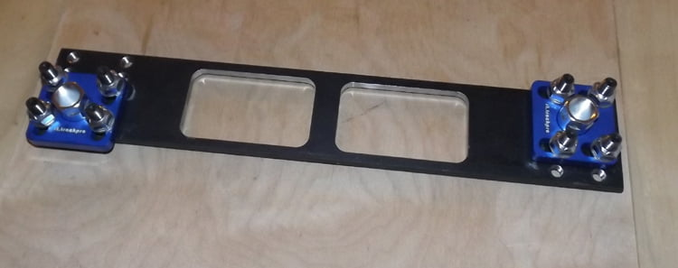
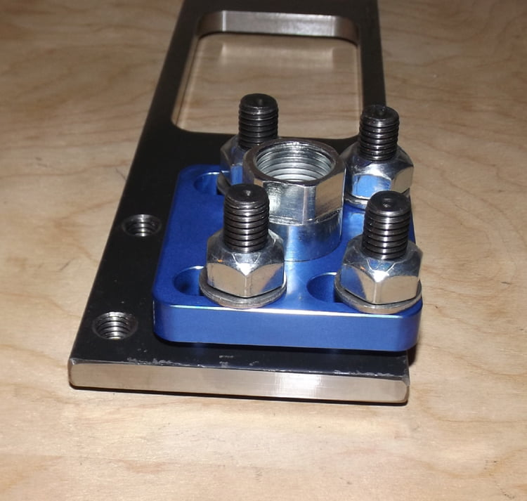
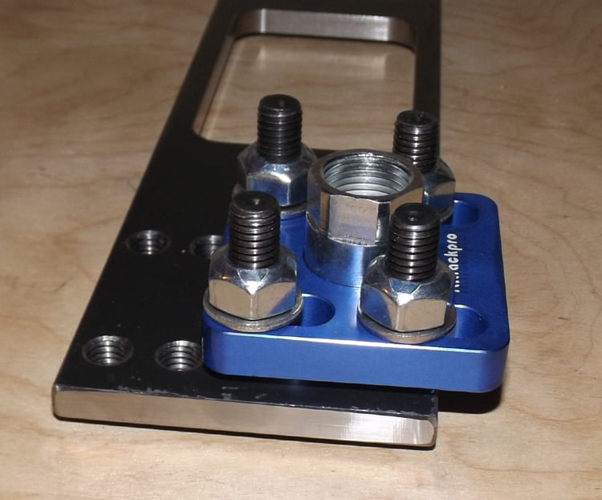
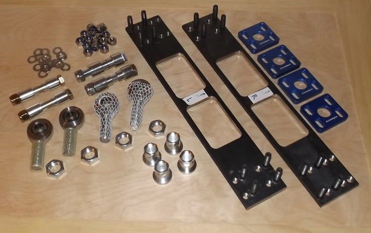
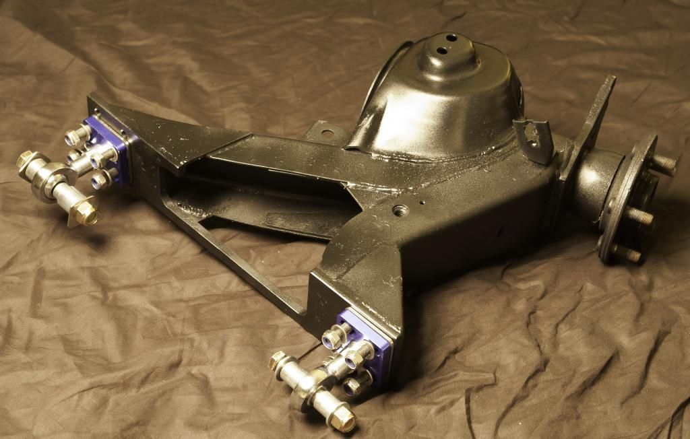
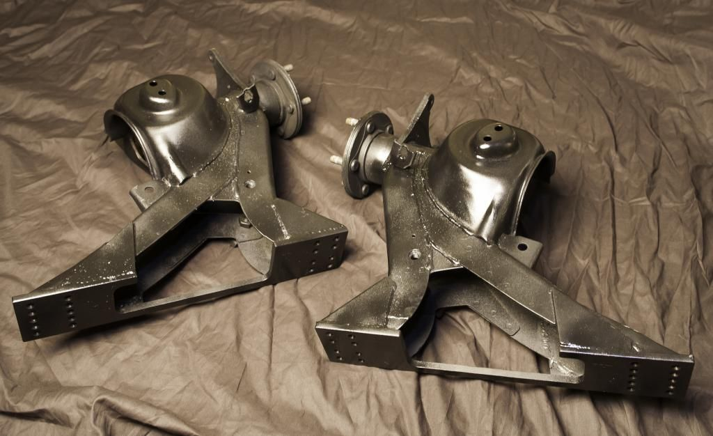

-
Let's make this one the catch-all for everything us crazy people do to the trailing arms, I know russ84na will chime in soon, but here's my second iteration in the meantime…
Keep in mind this is the process I follow, sometimes I have designs in parallel going through their own evolution, ultimately to see which one is more favourable in the most important ways
This method would allow over 2 degrees of camber correction
1. The backing plate is small and high strength, with pre-welded studs in a 30x44mm rectangle pattern
2. The mid-plate is the one that gets welded to the arm where it's cut off, the cutline being around 4.25" from the ends
3. The clamping plate is slotted perpendicular to the mid-plate to allow a second axis of movement
4. The turnbuckle provides up to 15mm of extension at either pivot, but the arm can be cut and welded to bias any length change
v2plate-4.jpg
v2arm-3.jpg
v2arm-2.jpg
v2arm-1.jpg -
First and maybe more important iteration is below; the overall target user for this one is more advanced, it requires knowing specific goals…

The first thing you'll notice is there is no backing plate, the studs mount directly to the weld-on plate meaning you get more threads available (or to interfere) on the clamping side; the second thing is that because the studs are now fixed in pre-set positions, you have to know in advance what range of adjustment you need to be in
Since the clamping plates alone don't have as much fine adjustment as the slotted V2 style in the previous post, the stud positions give you a base offset to start from… this would give you over 3 degrees of correction!
Example 1: the middle hole positions are approximately 1 degrees of base camber correction, the clamping plate can allow a further half degree or so, which would be perfect for someone intending to reduce their camber from -2.5 to -1 or -1.5, which is a good street setting
Example 2: the bottom hole positions are approximately 3 degrees of base correction, you could then dial it back down with the clamping plate to reduce static camber from -3.5 or -4 to something more manageable


Of course gusseting on the back or top/bottom edges to the arm will be required, and I am working on including a pre-bent wrap around plate that can be used to box it in, if I can keep the costs where I want
If you were overly fond of gusseting, you could do it like this:
gussets.jpg
The overall kit consists of a ton of components:

As you might also see the port holes in the arm allow you to retain the brake line bracket and pass it through normally, no bending or rerouting needed, unless they break (yay for corrosion!), but the upper cross bracing will have to be trimmed to clear the frame rail above it or removed entirely; in the meantime it will help with the welding
Another advantage to V1 would be the extreme trackwidth bias you could use, as there's nothing limiting arm placement on the plate (this equates to about 1.5" of track width increase per side, and would require axle spacers):
trailing-arm-max-width.jpg
PS. I would replicate the port holes on V2 as well, but for mockup it didn't seem important
shimmed-assemly.jpg
PPS. I'm having a run of shim plates (in 304SS) made to take up the gap between the backing plate and clamp plate for V1 here -
GE,
This keeps getting better. Please keep the updates coming. I have seen Russ's install and specifications. The opportunity is looking better with the feedback.86na - BlueZ
Shiro #366 - Kouki Monster
85t - Mr Tickles -
Toe adjustment only basically. Seems to work ok.

1988 300zxt. gt35, stance, etc. Wheels: Varrstoen ES2 18x9.5 et-13 225/40. 18x10.5 et0 245/40
1990 jetta vr6'd -
GE, any updates on your kit? Do you have a rough price range you are thinking?85 Z31 6.0 LSX turbo 766whp/792wtq
04 GTO, LS6, big cam, porting, N20… underway for summertime daily driver. -
Yea, waiting on the early adopters to give me proper feedback
But as it is, the kit will be in the range of $350+ship, with some optional components for a little extra… -
Cool, I was debating on hacking apart my trailing arms this winter to gain some more positive camber. With my eccentric bolts maxed out, I'm still sitting at -.7 degrees.
Your kit looks very well made, but do you feel that your kit would be up to the task of holding the power I am putting down?85 Z31 6.0 LSX turbo 766whp/792wtq
04 GTO, LS6, big cam, porting, N20… underway for summertime daily driver. -
You know I've been considering that very topic as of late, and the answer is, I don't know for sure… your torque figures are way beyond the norm, and with sticky tires, that can break many things already.
That said, I can make beefier turnbuckles and clamp plates without redesigning the rest, in your case that might be a good idea -- there would be some added cost, but if you're serious about a kit, I can make it happen
-
I wonder if SATAN would fuck up the camber setting every time he launched… hmm…Feedback- viewtopic.php?f=18&t=19840

-
No because it would be like digging in your heels…
My only concern is excessive flex, premature fatiguing basically; it was designed with 400hp in mind, not 800 -

Dont give up, build your dream Z

Copyright © 2006–. All rights reserved. Privacy Policy